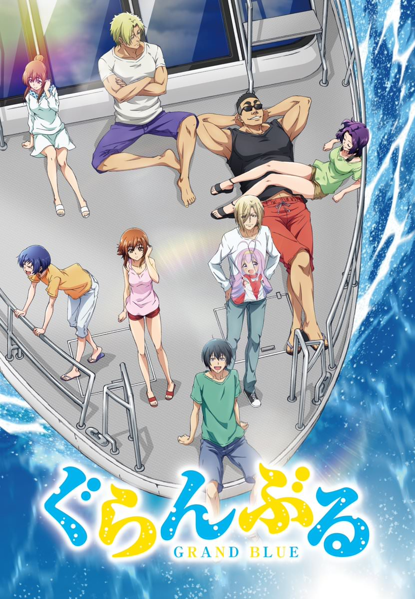

原作：井上堅二、吉岡公威
監督、劇本、音響監督：高松信司
角色設計：草間英興
總作畫監督：植田羊一
美術監督：秋葉稔（Studio Jack）
道具設計：小川浩
色彩設計：松山愛子
攝影監督：今泉秀樹
編輯：宇都宮正記
音響製作：Saber Links
音樂：Manual of Errors
動畫製作：ZERO-G
片頭曲(OP)
Grand Blue
歌：湘南乃風
作詞、作曲：湘南乃風，編曲：湘南乃風、STAND ALONE
第12話用作片尾曲
片尾曲(ED)
紺碧のアル・フィーネ ～二軒目にカラオケに入った俺たちのテンションスーパーMAXver.～（第1~10話）
歌：伊豆乃風（伊織：CV.內田雄馬／耕平：CV.木村良平／時田：CV.安元洋貴／壽：CV.小西克幸）
作詞：藤永龍太郎（Elements Garden），作曲、編曲：末益涼太（Elements Garden）
紺碧のアル・フィーネ ～水樹カヤver.～（第11話）
歌：水樹夏夜（CV.水樹奈奈）
作詞：藤永龍太郎（Elements Garden），作曲、編曲：末益涼太（Elements Garden）